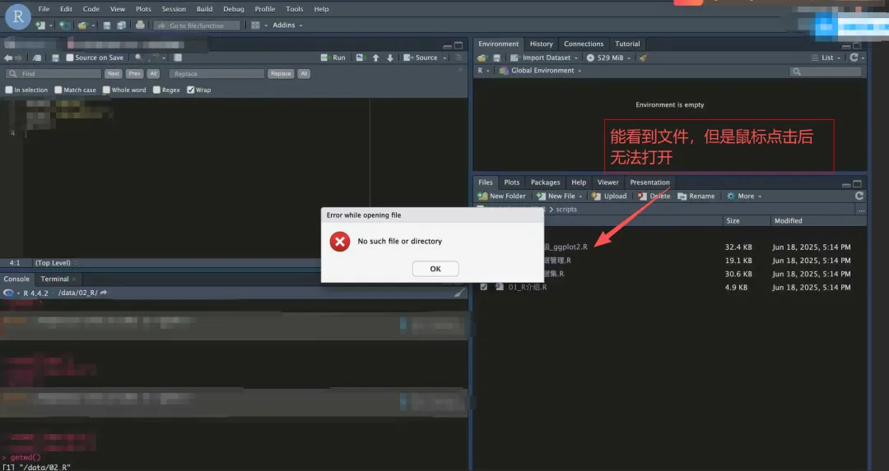
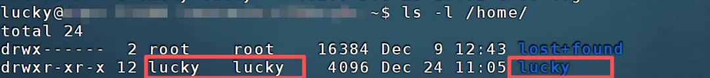

明明都看到文件了，为啥提示不存在？
原文：https://mp.weixin.qq.com/s?__biz=MzAwMzIzOTk5OQ==&mid=2247537928&idx=1&sn=6037cec0da783c1fcba7fdc5ccd39eaa&chksm=9b3c2c58ac4ba54e6ef8122c6e3532d5bcbe14fd4a64636f17df79b7c08bd5dcbfb107fd1d7f#rd
合集：答读者问
一、遇到问题解决问题
1、服务器能看到文件，但是Rstudio双击打开却提示此文件或目录不存在
（1）报错界面

通过代码核对也没有问题，文件在目标目录确实是存在的：
（2）原因
由于Rstudio-server进入时会默认设置家目录为工作目录，如果当前登录账号没有当前服务器账户个人家目录的访问权限(read权限)，就会导致Rstudio-server的这个报错，最终导致我们能看到却无法打开文件。
（3）解决方法
核对家目录拥有者
确保家目录拥有者和自己用户名一致，例如用户名lucky，家目录的拥有者也是lucky，那么这种情况是可以正常读取文件的。如果不一致，可以使用chown命令修改。如果对于chown命令不熟悉，可以先学习一遍Linux| 15.文件权限管理: chown, chmod，更多linux命令可以查看十小时学会Linux教程哦！
*
sudo chown -R lucky:lucky /home/lucky

或者使用chmod命令修改对应文件的权限
*
sudo chmod -R 755 /home/lucky/
二、打铁还需自身硬
编程语言作为生信分析的半壁江山，我们出过相关的培训课程：R语言入门课、Python入门课、11万播放量的生信Linux教程课程均有回放，可联系客服[Biomamba_zhushou]领取资料并进群，另外还有老师答疑解惑。
当然我们也做过大量基于R语言、Linux、Python和Perl语言的教程分享：
R语言基础教程
30条R语言基础命令
R语言基础学习手册
打开R语言的大门
R语言基础| 下载、安装
R语言基础| 创建数据集
R语言基础| 数据基本管理与操作
R语言基础| 可视化初探(ggplot2)
R语言基础| 高级数据管理
R语言基础| 基本图形绘制
R语言基础| 基本统计分析
R语言基础| 回归分析
R语言基础| 方差分析
R语言基础| 中级绘图
R语言基础| 广义线性模型
R语言基础| 功效分析
主成分分析和因子分析
R语言基础| 时间序列分析
R语言基础| 聚类分析
R语言基础| 机器学习
如何光明正大地"编数据"
ggplot2图片自定义与拼图
向下滑动查看更多
R语言入门教程（B站已同步视频课程）
R语言入门课| 01绪论
R语言入门课| 02 R及Rstudio的下载与安装
R语言入门课| 03 Rstudio基本使用技巧
R语言入门课| 04 R语言基本函数
R语言入门课| 05 一文掌握R语言常见数据类型
R语言入门课| 06 R语言常见数据读取
R语言入门课| 07 变量的计算
R语言入门课| 08 变量的重编码与重命名
R语言入门课| 09 缺失值与无限值处理
R语言入门课| 10 数据分类与排序
R语言入门课| 11数据的合并、选择、剔除
R语言数据处理神包——dplyr
R语言绘图神器| ggplot2与其基本用法介绍
R语言绘图神器| geom函数
ggplot2分组与分面
ggplot2标度与标签
ggplot图片主题 复用与保存
R语言基础自测题
patchwork:正经生信人拼图谁用AI啊？
ggsci，搞定你的SCI绘图配色
向下滑动查看更多
R语言进阶教程主要包括Rstudio使用教程、ComplexHeatmap、UpsetR、GSVA、WGCNA和其它包的使用及R语言中的debug。
Rstudio的使用
在Rstudio中使用同一个R包的不同版本
Rstudio-server为什么总是登不进去
Rstudio-server卡顿的解决方案
如何连接终端和Rstudio-server
Rstudio常见使用技巧
Rstudio-server的安装、配置、维护
ComplexHeatmap
ComplexHeatmap学习手册
热图绘制天花板：ComplexHeatmap| 一、初探
热图绘制天花板| 二、两万字长文探索注释功能
ComplexHeatmap| 三、用富集分析结果做成词云注释热图
ComplexHeatmap| 四、Heatmap的组合拳
ComplexHeatmap| 五.图片编译和输出问题
ComplexHeatmap| 六、图注
ComplexHeatmap| 七、热图修饰
ComplexHeatmap| 八、基因突变瀑布图
ComplexHeatmap| 九、与其它工具的整合
ComplexHeatmap| 十、密度热图与堆积柱状图
ComplexHeatmap| 11. 3D热图
ComplexHeatmap| 12. 基因组水平热图
UpSetR
UpSetR高阶韦恩图| 1.基本用法
UpSetR高阶韦恩图| 2.标注与图注
UpSetR高阶韦恩图| 3.图形组合注释
UpSetR高阶韦恩图| 4.注释及图片调整
GSVA
文献阅读系列（九）、一文了解GSVA原理
三行搞定GSVA分析
一文搞定GSVA及下游分析的代码实现
WGCNA
一文学会WGCNA
WGCNA+cytoscape构建基因表达模块网络图
一文搞定单细胞/空间转录组的WGCNA分析
WGCNA代码及结果解读
其它包的使用安装R包的几种方式
热图绘制2.0
谁说画解剖示意图一定要用AI了
手把手系列之 微生物组（一）：metacoder
一文搞定相关性分析
Pathview: 包如其名，通路可视化
爱心永不过时
心形函数的R语言实现
来个线性回归分析
想知道自己研究的基因在染色体上如何分布吗
简易版RCircos
patchwork:正经生信人谁用AI啊？
各类单细胞对象（数据格式）转换大全（一）
不会吧不会吧，不会真有人转PDF文件会充钱叭
给你安排一个懂生信的工具人（六）：再也不怕装不上packages了
习惯了用R画图，这次反过来用R处理图片
相关性分析用腻了ggcorrplot, 来试试ggcor吧
相关性分析的最新选择：linkET
自此配色烦恼不相逢——ggsci
如何用R语言生成词云
最满意的一次更新
单细胞数据在R中的读取及存储速度太慢怎么办？这个神包来帮你！
一起用R语言画一面五星红旗!
一个R语言统计例题
没有后续了么。。。
如何用R语言发邮件
如何在没有root权限的情况下使用R语言
搞定两千款R包的安装
如何在R语言中调用Python
染色体可视化神包——RIdeogram
在VSCode中调用Jupyterlab和R
一文学会MarkDown
用R语言画生信基地圣诞树~
R语言中的debug
一个小BUG的解决方案
what？！写好的脚本乱码了？
珍爱生命，远离Excel
批量整理好GEO中下载的单细胞数据
装着装着我R没了？
答读者问（十八）、一个我至少被问过30遍的monocle报错
答读者问(十九): R语言内存问题-Error: cannot allocate vector of size ** Gb
答读者问（二十）四个单细胞样本只给了一套文件怎么读
一次糟糕的R包学习体验
conda装的R不能在Rstudio里装R包
【高端局】怎么在Rstudio中debug
R语言对象命名居然可以是中文
单细胞R语言理论自测
向下滑动查看更多
Linux
十小时学会Linux
跟着Biomamba一起学Linux| 一.计算机硬件组成
Linux| 二.计算机软件组成与Linux
Linux| 三.免费获得Linux系统-WSL
Linux|四.免费获得Linux系统-虚拟机
Linux|五.免费获得Linux系统-服务器
Linux| 六.命令行与与基本命令
Linux| 七.获取Linux命令帮助的几种方式
Linux| 八.Linux的文件目录系统
Linux| 九.路径查看与切换: pwd,cd,ls命令
Linux| 十.通配符
Linux| 11.文件删除: rm命令
Linux| 12.文件的复制(cp)与移动(mv)
Linux| 13.用户与组群概念
Linux| 14.用户管理命令(useradd, passwd, userdel, su)
Linux| 15.文件权限管理: chown, chmod
Linux| 16.快捷键
Linux| 17.输出重定向
Linux| 18.管道符
Linux| 19.文件查找 find, locate, which
Linux| 20.别名 alias
Linux| 21.软链接与硬链接 ln
Linux| 22. (解)压缩与md5值校验
Linux| 23. 文件查看 wc, cat, head, tail
Linux| 24. 文件浏览器 more,less
Linux| 25. 文件编辑器 vim
Linux| 26. 文件处理 cut, paste
Linux| 27. 文件处理 sort, uniq
Linux| 28. 正则表达式
Linux| 29. 文本处理 grep
Linux| 30. 文本处理 sed命令
Linux| 31. 文本处理 awk命令
Linux| 32. shell脚本
Linux| 33. shell变量
Linux| 34. if条件语句
Linux| 35. 循环
Linux与Windows实现文件交互的几种方式
常用Linux命令
如何在Linux中安装指定版本的R
生信软件管家——conda的安装、使用、卸载
一文搞定Linux文件传输命令
来不及解释了快上车！
SCI-HUB总是刷不出来？来试试bget
一文搞定Linux文件传输命令
一文掌握fastqc使用及结果解读
一文了解Trimmomatic及使用方法
fastq文件预处理神器——fastp
Linux也有百度云喔~
一文了解并掌握samtools
Linux基础自测题
单细胞Linux理论自测题
向下滑动查看更多
Python
生信Python速查手册
Python安装(Windows+Linux)
Python的"Rstudio"——Pycharm
码Python神器：jupyter notebook
一文了解Python基础：字面量、注释、变量、类型、运算符
Python判断语句
Python循环语句
Python函数与方法
一文掌握Python数据容器
Python函数进阶
Python文件操作
Python异常
Python模块
Python包的创建、导入、安装
Python数据可视化案例:pyecharts
类与对象
Python多线程编程
Python中的正则表达式
一文掌握NumPy
十分钟速通pandas
Python入门自测题
jupyter如何切换内核在VSCode中调用Jupyterlab和R码Python神器之Spyder| 安装、连接与使用8小时掌握生信PythonPython入门课| 01. 绪论Python入门课| 02. python下载与安装Python入门课| 03. 变量与数据类型Python入门课| 04. 类型转换
向下滑动查看更多
还有一种古老的语言：perl语言基础命令

如何联系我们

 留一个领取资料、开箱即用的单细胞分析镜像的微信号[Biomamba_zhushou]，方便各位随时交流。同时我们也构建了交流群矩阵，欢迎大家入群讨论。
大家可以阅读完这几篇之后添加给生信入门初学者的小贴士
没有检索，就没有发言权
留一个领取资料、开箱即用的单细胞分析镜像的微信号[Biomamba_zhushou]，方便各位随时交流。同时我们也构建了交流群矩阵，欢迎大家入群讨论。
大家可以阅读完这几篇之后添加给生信入门初学者的小贴士
没有检索，就没有发言权
已有生信基地联系方式的同学无需重复添加

 您点的每个赞和在看，我都认真当成了喜欢
您点的每个赞和在看，我都认真当成了喜欢